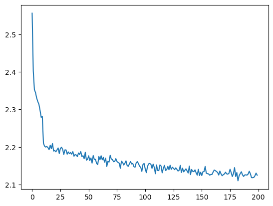
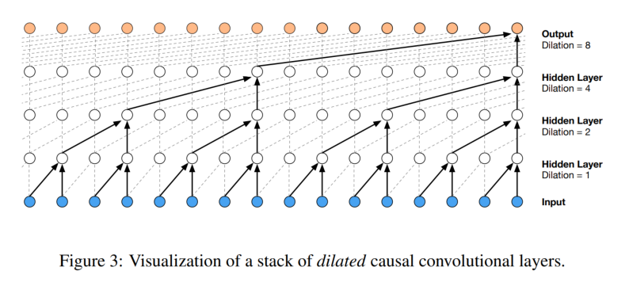
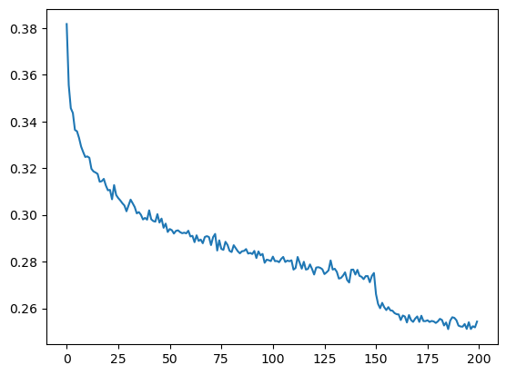

import torch
import torch.nn.functional as F
import matplotlib.pyplot as plt
import mathWavenet
Understanding and implemenatation of the Wavenet Model
WaveNet Implementation: Based on Andrej Karpathy’s Lecture
This notebook is a practical follow-up to Andrej Karpathy’s “Building makemore Part 5: Building a WaveNet” lecture. Check out the full lecture here.
Here’s what we’ll cover:
- Model Basics: Introduction to a multi-layer perceptron character-level language model.
- Model Enhancement: Expanding the architecture and input characters for better results.
- WaveNet Overview: Understand WaveNet’s hierarchical structure and its predictions.
- Batch Normalization: Dive into the BatchNorm layer and its challenges.
- PyTorch Containers: A look at how PyTorch structures its layers.
- Dataset Expansion: Increase the context length for performance improvement.
- Forward Pass: Visualization of tensor transformations in the network.
- BatchNorm1D Bug: Addressing an implementation bug.
- Development Insights: Best practices in deep neural network development.
- Optimizing WaveNet: Suggestions and strategies for better performance.
This notebook aims to provide a clear understanding of WaveNet’s development and optimization process.
Starter Code
WaveNet
WaveNet Overview:
- Nature of the Model: WaveNet is a fully probabilistic and autoregressive model. This means that when predicting any given audio sample, it considers all the previous samples.
- Efficiency: It can be trained efficiently on very high-resolution audio data (e.g., data with tens of thousands of samples per second).
- Performance: For text-to-speech tasks, human listeners rated the outputs of WaveNet as more natural sounding than other leading methods. Additionally, it can switch between different speakers by conditioning on the speaker’s identity. WaveNet can also generate musical fragments that sound realistic.
Technical Insights:
Generative Model for Audio: WaveNet operates directly on raw audio, predicting the probability of each audio sample based on the previous ones. The model’s structure is inspired by PixelCNN, which was designed for images.
Dilated Causal Convolutions: To ensure that predictions for any timestep don’t depend on future timesteps, the model uses causal convolutions. “Dilated” convolutions are introduced to effectively increase the receptive field (the portion of the input data the model “sees”) without significantly increasing computational cost.
Softmax Distributions: Instead of using a mixture model, the paper employs a softmax distribution for modeling audio samples. To manage the high-resolution of raw audio, a µ-law companding transformation is applied to the data before quantizing it.
Gated Activation Units: The paper uses a specific type of activation function for the neural network, which was found to work particularly well for audio signals.
Residual and Skip Connections: These are techniques to help train deeper neural networks more effectively. They help in faster convergence and enable deeper model architectures.
Conditional WaveNets: WaveNet can be conditioned on additional inputs, which allows it to generate audio with specific characteristics. For example, by conditioning on a speaker’s identity, WaveNet can produce audio in that speaker’s voice. The paper distinguishes between global conditioning (affecting the whole audio) and local conditioning (affecting specific parts of the audio).
Context Stacks: To increase the receptive field size, the paper introduces the concept of context stacks. These are separate smaller networks that process longer parts of the audio signal and condition the primary WaveNet model.
Applications:
- Text-to-Speech (TTS): WaveNet can produce very natural-sounding speech, surpassing other state-of-the-art systems.
- Voice Modulation: A single WaveNet model can mimic many different speakers.
- Music Generation: WaveNet can generate realistic musical fragments.
- Other Audio Tasks: The model is also promising for tasks like speech enhancement, voice conversion, and source separation.
In essence, WaveNet is a breakthrough in audio generation, offering a versatile and powerful model for a range of audio-related tasks.
words = open("names.txt", "r").read().splitlines()
print(words[:8])
print(len(words))['emma', 'olivia', 'ava', 'isabella', 'sophia', 'charlotte', 'mia', 'amelia']
32033chars = sorted(list(set("".join(words))))
stoi = {s: i + 1 for i, s in enumerate(chars)}
stoi["."] = 0
itos = {i: s for s, i in stoi.items()}
vocab_size = len(stoi)
print(itos)
print(vocab_size){1: 'a', 2: 'b', 3: 'c', 4: 'd', 5: 'e', 6: 'f', 7: 'g', 8: 'h', 9: 'i', 10: 'j', 11: 'k', 12: 'l', 13: 'm', 14: 'n', 15: 'o', 16: 'p', 17: 'q', 18: 'r', 19: 's', 20: 't', 21: 'u', 22: 'v', 23: 'w', 24: 'x', 25: 'y', 26: 'z', 0: '.'}
27block_size = 3
def build_dataset(words):
X, Y = [], []
for w in words:
context = [0] * block_size
for ch in w + '.':
ix = stoi[ch]
X.append(context)
Y.append(ix)
context = context[1:] + [ix]
X = torch.tensor(X)
Y = torch.tensor(Y)
print(X.shape, Y.shape)
return X, Y
import random
random.seed(42)
random.shuffle(words)
n1 = int(0.8*len(words))
n2 = int(0.9*len(words))
Xtr, Ytr = build_dataset(words[:n1])
Xdev, Ydev = build_dataset(words[n1:n2])
Xte, Yte = build_dataset(words[n2:])torch.Size([182625, 3]) torch.Size([182625])
torch.Size([22655, 3]) torch.Size([22655])
torch.Size([22866, 3]) torch.Size([22866])for x, y in zip(Xtr[:15], Ytr[:15]):
print("".join(itos[ix.item()] for ix in x), "---->", itos[y.item()])... ----> y
..y ----> u
.yu ----> h
yuh ----> e
uhe ----> n
hen ----> g
eng ----> .
... ----> d
..d ----> i
.di ----> o
dio ----> n
ion ----> d
ond ----> r
ndr ----> e
dre ----> .High-level hierarchical view of PyTorch API
The PyTorch API is extensive, but I’ll provide a high-level hierarchical view of its core components, which should give you a roadmap for diving deeper:
- Tensors
- Core data structure in PyTorch, similar to NumPy arrays but with GPU support.
torch.Tensorclass and its various methods.- Creation:
torch.empty(),torch.rand(),torch.zeros(),torch.ones(),torch.tensor(), etc. - Operations: Mathematical, Reduction, Comparison, Matrix, etc.
- Indexing, Slicing, Joining, Mutating ops:
torch.cat(),torch.stack(), etc.
- Autograd
- Automatic differentiation library.
torch.autogradmodule.Variable: Deprecated, but historically important. All Tensors now haverequires_gradattribute.Function: Defines a forward and backward operation. Links toVariableto build a computation graph.
- Neural Networks
torch.nnmodule.- Layers: Pre-defined layers like
nn.Linear,nn.Conv2d,nn.ReLU, etc. - Loss functions:
nn.CrossEntropyLoss,nn.MSELoss, etc. - Optimizers: Located in
torch.optim, e.g.,optim.Adam,optim.SGD. - Utilities:
nn.functionalfor stateless functions like activation functions. nn.Module: Base class for all neural network modules, aiding in organizing code and parameters.nn.Sequential: A sequential container for stacking layers.
- Utilities
- Tensor transformations:
torchvision.transforms. - Data handling for NN training:
torch.utils.data.Dataset,torch.utils.data.DataLoader.
- Tensor transformations:
- Optimization
torch.optimmodule.- Optimization algorithms like SGD, Adam, RMSProp, etc.
- Learning rate schedulers: Adjust LR on-the-fly during training.
- Serialization
- Save and load models:
torch.save(),torch.load(),nn.Module.load_state_dict(), etc.
- Save and load models:
- Distributed Training
torch.distributed: For multi-GPU and distributed training.- Backend support for different communication protocols.
- Other Libraries & Extensions
torchvision: Datasets, models, and image transformations for computer vision.torchaudio: Audio processing tools and datasets.torchtext: NLP data utilities and models.
- Device & CUDA
- Tensor operations on different devices: CPU, GPU.
- CUDA Tensors: Tensors transferred to GPU.
- Device management:
torch.cuda,torch.device.
- JIT Compiler
torch.jit: Just-In-Time compiler to convert PyTorch models to a representation that can be optimized and run in non-Python environments.
- Quantization
- Reduce the size of models and increase runtime performance.
torch.quantization: Contains utilities for model quantization.
Start with Tensors and Autograd to get a solid grasp on the basics. Then, you can delve into neural networks with the torch.nn module. After mastering these, choose specialized topics based on your interests and needs.
# Layers made in part 3
class Linear:
def __init__(self, fan_in, fan_out, bias = True):
self.weight = torch.randn((fan_in, fan_out))
self.weight /= fan_in ** 0.5
self.bias = torch.zeros((fan_out)) if bias else None
def __call__(self, x):
self.out = x @ self.weight
if self.bias is not None:
self.out += self.bias
return self.out
def parameters(self):
return [self.weight] + ([] if self.bias is None else [self.bias])
class BatchNorm1d:
def __init__(self, dim, eps=1e-5, momentum = 0.1):
self.eps = eps
self.momentum = momentum
self.training = True
# parameters (trained with backprop)
self.gamma = torch.ones(dim)
self.beta = torch.zeros(dim)
# buffers (trained while running `momentum update`)
self.running_mean = torch.zeros(dim)
self.running_var = torch.ones(dim)
def __call__(self, x):
if self.training:
# batch mean
xmean = x.mean(0, keepdim= True)
# batch variance
xvar = x.var(0, keepdim= True)
else:
xmean = self.running_mean
xvar = self.running_var
xhat = (x - xmean) / torch.sqrt(xvar + self.eps)
self.out = self.gamma * xhat + self.beta
# update the buffers in training
if self.training:
with torch.no_grad():
self.running_mean = (1 - self.momentum) * self.running_mean + self.momentum * xmean
self.running_var = (1 - self.momentum) * self.running_var + self.momentum * xvar
return self.out
def parameters(self):
return [self.gamma, self.beta]
class Tanh:
def __call__(self, x):
self.out = torch.tanh(x)
return self.out
def parameters(self):
return []Random seeding in the context of PyTorch and neural network training.
1. Purpose of Seeding:
In machine learning, especially in neural networks, we often initialize weights and biases randomly. Moreover, when you’re dealing with stochastic processes like dropout, sampling, and other random transformations, the behavior can differ from one run to another due to the randomness. By setting a seed for these random operations, we ensure that the randomness is consistent across multiple runs, making experiments reproducible.
2. torch.manual_seed() vs. torch.Generator():
torch.manual_seed(seed): This sets the seed for the default global generator in PyTorch. Every time you call a function that involves randomness without specifying a generator, it uses the global generator. When you set a manual seed, you’re setting the seed for this global generator. It’s a straightforward way to ensure consistent randomness throughout your program.
torch.Generator(): This creates an independent random number generator. You can manually set the seed for this generator and use it for specific operations, keeping it separate from the global generator. This is particularly useful when you want different parts of your code to have different random behaviors, but still want each of those behaviors to be reproducible.
3. Why not always use torch.manual_seed()?:
In many cases, using torch.manual_seed() is sufficient, especially for simpler projects and experiments. However, as your projects grow in complexity, there might be reasons to maintain different seeds:
Fine-grained Control: You might want different parts of your code to operate with different seeds. For example, if you’re doing multi-task learning with multiple neural networks, you might want to initialize each network with a different seed, but still want each initialization to be reproducible.
Parallelism: When running operations in parallel, having separate generators can prevent potential synchronization issues and ensure that each parallel operation is consistent across runs.
Isolation: By using different generators for different parts of your code, you can change one part of your code without affecting the randomness in another part.
Conclusion:
While torch.manual_seed() is a quick and effective method for most use cases, as your projects become more complex, you might find situations where the granularity and control offered by torch.Generator() become necessary. Knowing when and how to use each method appropriately can make your experiments more organized and your results more reliable.
torch.manual_seed(42)<torch._C.Generator at 0x7f228c1dc9b0>n_embd = 10
n_hidden = 200
C = torch.randn((vocab_size, n_embd))
layers = [
Linear(n_embd * block_size, n_hidden, bias= False),
BatchNorm1d(n_hidden),
Tanh(),
Linear(n_hidden, vocab_size)
]
with torch.no_grad():
layers[-1].weight *= 0.1
parameters = [C] + [p for l in layers for p in l.parameters()]
print(f"num parameters: {sum(p.numel() for p in parameters)}")
for p in parameters:
p.requires_grad_()num parameters: 12097## torch.randint
1. torch.randint:
torch.randint is a PyTorch function that returns a tensor filled with random integers generated uniformly between two specified integer values (low and high).
The function signature is:
torch.randint(low=0, high, size, *, dtype=None, layout=torch.strided, device=None, requires_grad=False)low(int, optional): Lowest integer to be drawn from the distribution. Default: 0.high(int): One above the highest integer to be drawn from the distribution.size(tuple): The shape of the output tensor.- Additional arguments like
dtype,device, andrequires_gradallow you to further specify the nature of the returned tensor.
2. Given Line:
This would produce a 1D tensor with 4 random integer values in the specified range.
This line aims to generate a tensor of random integer values between 0 (inclusive) and Xtr.shape[0] (exclusive).
ix = torch.randint(0, Xtr.shape[0], (4,))# same optimization as last time
max_steps = 200000
batch_size = 32
lossi = []
for i in range(max_steps):
ix = torch.randint(0, Xtr.shape[0], (batch_size,))
Xb, Yb = Xtr[ix], Ytr[ix]
# forward pass
emb = C[Xb] # embed characters into vector space
x = emb.view((emb.shape[0], -1)) # flatten
for layer in layers:
x = layer(x)
# compute loss
loss = F.cross_entropy(x, Yb)
# backward pass
for layer in layers:
layer.out.retain_grad()
for p in parameters:
p.grad = None
loss.backward()
# update
lr = 0.1 if i < 10000 else 0.01
for p in parameters:
p.data -= lr * p.grad
# track stats
if i % 10000 == 0:
print(f"step {i} loss {loss.item()}")
lossi.append(loss.item())step 0 loss 3.2844254970550537
step 10000 loss 2.317671060562134
step 20000 loss 2.330378293991089
step 30000 loss 1.8735352754592896
step 40000 loss 2.1151928901672363
step 50000 loss 1.5009478330612183
step 60000 loss 1.5936698913574219
step 70000 loss 2.6373109817504883
step 80000 loss 2.13984751701355
step 90000 loss 2.172301769256592
step 100000 loss 2.2835309505462646
step 110000 loss 2.4028546810150146
step 120000 loss 2.017624855041504
step 130000 loss 1.9769095182418823
step 140000 loss 2.0796420574188232
step 150000 loss 1.9310541152954102
step 160000 loss 2.306513547897339
step 170000 loss 1.9171533584594727
step 180000 loss 1.7749229669570923
step 190000 loss 1.8716074228286743Fixing the Learning Rate Plot
plt.plot(torch.tensor(lossi).view(-1, 1000).mean(1, keepdim= True).data);
Pytorchifying our code
Add Embedding, Flatten and Sequential Classes
Classes Definitions
torch.nn.Embedding.
1. The Concept of Embeddings:
Embeddings are a powerful tool in the world of deep learning, especially when dealing with categorical data, like words in a language. Instead of representing words or other categorical variables as discrete values (like integers), embeddings represent them as continuous vectors. These vectors capture more information and relationships between different words or categories.
2. torch.nn.Embedding:
torch.nn.Embedding is PyTorch’s module to create an embedding layer. Essentially, it’s a lookup table that maps from integer indices (representing specific words or categories) to dense vectors (their embeddings).
3. Parameters:
num_embeddings: Total number of distinct categories/words.
embedding_dim: The size of each embedding vector, i.e., the number of units each embedding should have.
4. Why Use Embeddings?:
Dimensionality Reduction: One-hot encoded vectors can be massive (imagine a vector of length 50,000 for a moderate-sized vocabulary, with all zeros except for a single one). Embeddings condense this information into a much smaller dimension, like 300 for word embeddings.
Capture Relationships: Embeddings are learned from data. This means that words or categories that have similar meanings or behaviors can have embeddings that are close to each other in the vector space.
Flexibility: Embeddings can be fine-tuned during training. This means that as a model learns a task, it can also adjust the embeddings to capture any task-specific insights.
5. Usage:
An embedding layer is typically initialized with random weights and will learn an embedding for all the words in the training dataset. It is a flexible layer that can be used in a variety of ways, such as:
Pre-trained Embeddings: Sometimes, embeddings are pre-trained on a larger dataset and then fine-tuned on a specific task. Word2Vec, GloVe, and FastText are popular pre-trained word embeddings.
Task-specific Embeddings: For some tasks, it might be beneficial to let the embedding layer learn embeddings from scratch, tailored to the specific task.
6. Under the Hood:
At its core, an embedding layer is a weight matrix. The rows of this matrix correspond to each category’s unique ID (like a word’s ID), and the columns correspond to the embedding dimensions. When you “pass” an integer to this layer, it returns the corresponding row of the weight matrix. This operation is essentially a lookup, making it efficient.
Conclusion:
torch.nn.Embedding provides an efficient and straightforward way to handle categorical data in neural networks. By converting discrete categorical values into continuous vectors, embeddings enable models to capture intricate relationships in the data and improve performance on a variety of tasks.
torch.nn.Flatten.
1. The Basic Idea:
When working with neural networks, especially convolutional neural networks (CNNs), we often deal with multi-dimensional data (like images). After passing this data through several convolutional and pooling layers, we often want to use the resulting multi-dimensional feature maps in fully connected layers (dense layers). However, fully connected layers expect a 1D input. Here’s where torch.nn.Flatten comes in: it’s used to transform multi-dimensional data into a one-dimensional format.
2. torch.nn.Flatten:
torch.nn.Flatten is a layer provided by PyTorch that reshapes its input into a one-dimensional tensor. It’s effectively a ‘flattening’ operation.
3. Parameters:
start_dim: Dimension to start the flattening. Typically, for a batch of images, the data shape might be
[batch_size, channels, height, width]. If we want to flatten the channel, height, and width dimensions, we’d start the flattening from dimension 1 (0-based indexing for dimensions). By default,start_dimis 1.end_dim: Dimension to end the flattening. By default, it’s -1, meaning it will flatten all dimensions from
start_dimto the last dimension.
4. Why Use Flatten?:
Transitioning in Architectures: It’s common in CNNs to have convolutional layers followed by dense layers. The flatten layer acts as a bridge between these two, reshaping the output of the convolutional layers to a format that dense layers can work with.
Simplicity: Instead of manually reshaping tensors using
.view()or.reshape(),torch.nn.Flattenprovides a more readable and explicit way to flatten data within a model architecture.
5. Usage:
Imagine you have a batch of images with the shape [batch_size, channels, height, width]. After passing them through convolutional layers, you might get a shape like [batch_size, 64, 7, 7]. Before sending this to a fully connected layer, you’d use the flatten layer:
flat_layer = torch.nn.Flatten()
flattened_data = flat_layer(conv_output)Now, flattened_data will have a shape [batch_size, 64*7*7], ready to be passed to a fully connected layer.
6. In Context:
If you’re familiar with other deep learning frameworks, you might recognize this as similar to TensorFlow’s tf.keras.layers.Flatten or Keras’s Flatten layer. It’s a staple in the toolkit of designing deep learning architectures.
Conclusion:
torch.nn.Flatten is a utility layer in PyTorch that streamlines the process of converting multi-dimensional tensors into a one-dimensional format, easing the transition from convolutional layers to fully connected layers in neural network architectures. It’s a straightforward yet crucial component for many deep learning models, particularly CNNs.
torch.nn.Sequential.
1. The Basic Idea:
When building neural networks, we often create architectures that involve a series of layers or operations that process data in a specific order. torch.nn.Sequential is a container provided by PyTorch that allows us to encapsulate a sequence of modules or operations into a single module, streamlining both the definition and execution of such sequences.
2. torch.nn.Sequential:
At its core, torch.nn.Sequential is essentially an ordered container of modules. Data passed to a Sequential module will traverse through each contained module in the order they were added, with the output of one module becoming the input to the next.
3. Advantages:
Readability: Architectures, especially simpler ones, become more readable and compact. Instead of defining and calling layers separately, you can consolidate them into a single
Sequentialblock.Modularity: It allows for easy reuse of certain sequences of operations across different architectures. If a specific sequence of layers gets used frequently, encapsulating it within a
Sequentialblock makes it easier to plug into various models.
4. Usage:
Suppose you’re designing a simple feedforward neural network with two hidden layers and ReLU activations:
Without Sequential:
self.fc1 = torch.nn.Linear(input_size, hidden_size)
self.relu1 = torch.nn.ReLU()
self.fc2 = torch.nn.Linear(hidden_size, hidden_size)
self.relu2 = torch.nn.ReLU()
self.fc3 = torch.nn.Linear(hidden_size, output_size)With Sequential:
self.layers = torch.nn.Sequential(
torch.nn.Linear(input_size, hidden_size),
torch.nn.ReLU(),
torch.nn.Linear(hidden_size, hidden_size),
torch.nn.ReLU(),
torch.nn.Linear(hidden_size, output_size)
)The latter is clearly more concise and readable.
5. Points to Remember:
While
Sequentialis convenient, it’s most suited for networks where the data flow is linear. For architectures with branches (like skip connections in ResNets) or multiple inputs/outputs, manual layer definition might be more appropriate.Modules in
Sequentialare executed in the order they’re added, making the order crucial. Always ensure that layers are added in the intended sequence.
6. In Context:
If you’re familiar with other deep learning frameworks, the concept might remind you of Keras’s Sequential model. The idea of simplifying linear stacks of layers is a common one across various deep learning libraries, given its convenience.
Conclusion:
torch.nn.Sequential is a convenient tool in the PyTorch library that helps in compactly defining and organizing linear sequences of operations in neural network architectures. While incredibly useful for straightforward, linear data flows, it’s essential to remember its limitations when dealing with more complex architectures.
# Layers made in part 3
class Linear:
def __init__(self, fan_in, fan_out, bias = True):
self.weight = torch.randn((fan_in, fan_out))
self.weight /= fan_in ** 0.5
self.bias = torch.zeros((fan_out)) if bias else None
def __call__(self, x):
self.out = x @ self.weight
if self.bias is not None:
self.out += self.bias
return self.out
def parameters(self):
return [self.weight] + ([] if self.bias is None else [self.bias])
class BatchNorm1d:
def __init__(self, dim, eps=1e-5, momentum = 0.1):
self.eps = eps
self.momentum = momentum
self.training = True
# parameters (trained with backprop)
self.gamma = torch.ones(dim)
self.beta = torch.zeros(dim)
# buffers (trained while running `momentum update`)
self.running_mean = torch.zeros(dim)
self.running_var = torch.ones(dim)
def __call__(self, x):
if self.training:
# batch mean
xmean = x.mean(0, keepdim= True)
# batch variance
xvar = x.var(0, keepdim= True)
else:
xmean = self.running_mean
xvar = self.running_var
xhat = (x - xmean) / torch.sqrt(xvar + self.eps)
self.out = self.gamma * xhat + self.beta
# update the buffers in training
if self.training:
with torch.no_grad():
self.running_mean = (1 - self.momentum) * self.running_mean + self.momentum * xmean
self.running_var = (1 - self.momentum) * self.running_var + self.momentum * xvar
return self.out
def parameters(self):
return [self.gamma, self.beta]
class Tanh:
def __call__(self, x):
self.out = torch.tanh(x)
return self.out
def parameters(self):
return []
# ---------------- new ----------------
class Embedding:
def __init__(self, num_embeddings, embedding_dim):
self.weight = torch.randn((num_embeddings, embedding_dim))
def __call__(self, x):
self.out = self.weight[x]
return self.out
def parameters(self):
return [self.weight]
class Flatten:
def __call__(self, x):
self.out = x.view((x.shape[0], -1))
return self.out
def parameters(self):
return []
class Sequential:
def __init__(self, layers):
self.layers = layers
def __call__(self, x):
for layer in self.layers:
x = layer(x)
self.out = x
return self.out
def parameters(self):
return [p for l in self.layers for p in l.parameters()]Initialize the model
n_embd = 10
n_hidden = 200
model = Sequential([
Embedding(vocab_size, n_embd),
Flatten(),
Linear(n_embd * block_size, n_hidden, bias= False),
BatchNorm1d(n_hidden),
Tanh(),
Linear(n_hidden, vocab_size)
])
with torch.no_grad():
layers[-1].weight *= 0.1
parameters = model.parameters()
print(f"num parameters: {sum(p.numel() for p in parameters)}")
for p in parameters:
p.requires_grad_()num parameters: 12097Training the model
# same optimization as last time
max_steps = 200000
batch_size = 32
lossi = []
update_to_data_ratio = []
for i in range(max_steps):
ix = torch.randint(0, Xtr.shape[0], (batch_size,))
Xb, Yb = Xtr[ix], Ytr[ix]
# forward pass is now simpler
logits = model(Xb)
loss = F.cross_entropy(logits, Yb)
for p in parameters:
p.grad = None
loss.backward()
# update
lr = 0.1 if i < 10000 else 0.01
for p in parameters:
p.data -= lr * p.grad
# track stats
if i % 10000 == 0:
print(f"step {i} loss {loss.item()}")
lossi.append(loss.item())step 0 loss 3.531754493713379Model Evaluation
for layer in model.layers:
layer.training = False@torch.no_grad()
def split_loss(split):
x, y = {
"train": (Xtr, Ytr),
"valid": (Xdev, Ydev),
"test": (Xte, Yte)
}[split]
logits = model(x)
loss = F.cross_entropy(logits, y)
return loss.item()
print("train", split_loss("train"))
print("valid", split_loss("valid"))train 3.5045688152313232
valid 3.5048117637634277Sample from the model
# sampling from the model
g = torch.Generator().manual_seed(2147483647 + 10)
for _ in range(20):
out = []
context = [0] * block_size
while True:
# Forward pass
logits = model(torch.tensor([context]))
probs = F.softmax(logits, dim = 1)
ix = torch.multinomial(probs, num_samples = 1).item()
# Shift the Context Window
context = context[1:] + [ix]
if ix == 0:
break
out.append(ix)
print("".join(itos[i] for i in out))qwzqafikobfomyqgly
jqrfohseadzjqkfgqxaipbfdsgv
wqf
oidazkdqzhiehjwnwfohppcgtyog
csugtawfuhifxaste
j
kqmgqxia
hiahmjcplgpedqivr
t
nnoxoxuuxccvktuku
iatuuxghlharqrfzxabcr
qlocpyradlmtkstjutwjunolzoflgiizsxtnlexesdcbk
ilgulzmehtfglvbafwqxuxxuycvtknohajlsgevrrbbqr
qjjflupnv
j
tiesaedmgwijkcmjcftflpebyfnrqeqix
gtibmpgexvpynncobkjpnbotjez
meqfiuhkejfcjvsigosxgzfhbbkqximglxzmlhvcw
qidzkdebwwbncdrbwgtatqntzrfshjeqsydqaeohghojkqnkpbldigvxzahljktlupscrthmazgmegwxzsidqjwkn
bteruejqewqhgiljpdanqpnkogvluvpyofsqitcjcfmtcrdlpxlcfdnrnpjBuilding the WaveNet Model
# preview an image
import matplotlib.pyplot as plt
plt.figure(figsize=(10,20))
plt.imshow(plt.imread("dilated_casual_conv.png"))
plt.axis("off");
Changing Dataset blocksize
block_size = 8
def build_dataset(words):
X, Y = [], []
for w in words:
context = [0] * block_size
for ch in w + '.':
ix = stoi[ch]
X.append(context)
Y.append(ix)
context = context[1:] + [ix]
X = torch.tensor(X)
Y = torch.tensor(Y)
print(X.shape, Y.shape)
return X, Y
import random
random.seed(42)
random.shuffle(words)
n1 = int(0.8*len(words))
n2 = int(0.9*len(words))
Xtr, Ytr = build_dataset(words[:n1])
Xdev, Ydev = build_dataset(words[n1:n2])
Xte, Yte = build_dataset(words[n2:])torch.Size([182580, 8]) torch.Size([182580])
torch.Size([22767, 8]) torch.Size([22767])
torch.Size([22799, 8]) torch.Size([22799])for x, y in zip(Xtr[:15], Ytr[:15]):
print("".join(itos[ix.item()] for ix in x), "---->", itos[y.item()])........ ----> e
.......e ----> b
......eb ----> r
.....ebr ----> i
....ebri ----> m
...ebrim ----> a
..ebrima ----> .
........ ----> h
.......h ----> i
......hi ----> l
.....hil ----> t
....hilt ----> o
...hilto ----> n
..hilton ----> .
........ ----> jInitializing a normal network
n_embd = 10
n_hidden = 200
model = Sequential([
Embedding(vocab_size, n_embd),
Flatten(),
Linear(n_embd * block_size, n_hidden, bias= False),
BatchNorm1d(n_hidden),
Tanh(),
Linear(n_hidden, vocab_size)
])
with torch.no_grad():
layers[-1].weight *= 0.1
parameters = model.parameters()
print(f"num parameters: {sum(p.numel() for p in parameters)}")
for p in parameters:
p.requires_grad_()num parameters: 22097Implementing WaveNet
Our model gets improved using ideas from Wavenet
The finished model is inspired by WaveNet, which is a deep learning architecture designed for generating raw audio waveforms.
Innovation: 1. Hierarchical Fusion of Information: Instead of squashing all the character information into a single layer right at the beginning, the new model aims for a more hierarchical approach. This is akin to WaveNet’s methodology where information from previous contexts gets fused progressively as the network gets deeper. It’s a departure from the original network that was more linear in its approach. 2. FlattenConsecutive Layer: This new layer is essentially reshaping the data by grouping consecutive embeddings, which helps in retaining more granularity of information for longer sequences. 3. Increased Depth with Batch Normalization: The model has added depth, with multiple hidden layers interspersed with BatchNorm layers. Batch Normalization helps in stabilizing and accelerating the training of deeper networks.
Intuition: 1. Preserving Contextual Information: By not immediately squashing all characters into a single layer, the network retains more of the raw, granular information from the input. This is crucial when predicting the next character based on a sequence of prior characters. The more original context the model has, the better its predictive capability. 2. Progressive Fusion of Information: Just as our human cognition processes information hierarchically (from letters to words to sentences to paragraphs), the model is designed to gradually combine information. It first understands pairs of characters, then bigger chunks, and so on. This allows the model to capture both short-term and long-term dependencies in the data. 3. Stability with Batch Normalization: Deep networks can suffer from internal covariate shift where the distribution of layer inputs changes during training. Batch normalization standardizes the inputs of a layer, making training more stable and faster. 4. Embedding Layer: It’s a look-up table that maps from integer indices (representing specific words or characters) to dense vectors (their embeddings). These vectors are trainable and can capture the semantic relationship between words or characters. By using embeddings, the model can capture richer representations of the input data.
In summary, the hierarchical approach is inspired by WaveNet’s methodology of processing audio signals, where the prediction for the next audio sample depends on a gradually fused context of previous samples. By applying a similar approach to character prediction, the model aims to capture richer contextual information, leading to better predictions.
WaveNet Implementation and Tensor Management
Forward Pass Visualization
The lecturer is working on a neural network implementation of WaveNet. To ensure understanding and correct functioning, they visualize the forward pass by observing tensor shapes at each stage. This helps in understanding data transformations as it progresses through the network.
Input Batch and Shape
A batch of 4 random examples is created for debugging. The shape of the batch (referred to as ( xB )) is ($ 4 $) due to having 4 examples and a block size of 8.
Embedding Layer
The first layer is the embedding layer. When the integer tensor ( xB ) is passed through this layer, the output shape becomes ( $4 $). Here, each character has a 10-dimensional vector representation. The embedding layer takes the integers and converts them into these 10-dimensional vectors.
Flattening and Concatenation
The flattened layer views the ( $4 $) tensor as a ( $4 $) tensor. The effect is that the 10-dimensional embeddings for the 8 characters are lined up in a row, appearing as if they’ve been concatenated.
Linear Layer and Matrix Multiplication
The linear layer is responsible for transforming the shape from ( $4 \(\) to \(\) 4 $ ). This is achieved through matrix multiplication. The lecturer emphasizes that in PyTorch, the matrix multiplication operator is versatile and can handle higher-dimensional tensors, treating earlier dimensions as batch dimensions.
Restructuring Input
A key insight is that instead of flattening the entire input, we can group and process parts of it. For instance, the lecturer suggests grouping every two consecutive elements for processing in parallel. This results in a tensor shape of ($ 4 $).
Flattening Consecutively
To achieve the desired restructuring, the lecturer introduces a new method called “Flatten Consecutive”. This method differs from the regular flattening by allowing for flattening only a specified number of consecutive elements, leading to multi-dimensional outputs rather than fully flattened ones.
Model Layers and Parameter Count
The lecturer moves on to demonstrate how the neural network layers are organized. They ensure that the number of parameters remains consistent as the model architecture evolves, emphasizing the importance of maintaining model capacity.
WaveNet’s Performance
After restructuring the neural network, the lecturer observes that the validation loss remains nearly identical to the original, simpler model. This suggests that, at least in this instance, the added complexity doesn’t yield performance benefits.
Potential Issues with BatchNorm1D
The lecturer points out that while the model runs, there might still be issues, specifically with the BatchNorm1D layer. A thorough review of this layer is necessary to ensure it’s functioning correctly.
Shape Exploration
# look at batch of 5 examples (it's 4 in the original video but I changed it to 5 to prevent confusion)
ix = torch.randint(0, Xtr.shape[0], (5,))
Xb, Yb = Xtr[ix], Ytr[ix]
logits = model(Xb)
print(Xb.shape)
Xbtorch.Size([5, 8])tensor([[ 0, 19, 1, 14, 20, 9, 14, 15],
[ 0, 0, 0, 0, 26, 1, 13, 9],
[ 0, 0, 0, 0, 0, 0, 0, 0],
[ 0, 0, 0, 0, 0, 0, 16, 5],
[ 0, 0, 0, 0, 0, 14, 1, 8]])Update Embedding Layer
1. Current Model State:
The current model has training and validation losses that are close to each other. This suggests that the model isn’t overfitting. In such cases, a common approach to improve performance is to expand the model: increase its capacity by adding more neurons or layers.
2. Problem with Current Architecture:
Right now, the model takes in a sequence of characters, processes them through a single layer, and predicts the next character. This is somewhat akin to trying to understand a sentence by reading all its words at once. While you can add more layers, you’re still compressing all the information at the very beginning, which might be suboptimal.
3. Inspiration from WaveNet:
WaveNet offers a different approach. Instead of compressing all characters at once, it processes the input in a hierarchical manner. Imagine trying to understand a sentence not word by word, but by understanding two words at a time, then four words, then eight, and so on. This allows the model to capture relationships and patterns at different scales.
4. Progressive Fusion:
The key idea is to combine (or “fuse”) input data progressively. Start by combining pairs of characters (bigrams). Then, combine pairs of bigrams to form four-character chunks, and so on. This slow fusion ensures that the model has a more refined understanding of the input data at various levels of granularity.
5. Dilated Causal Convolutions:
While it sounds complex, the core idea is about efficiency and preserving information. In standard convolutions, each layer can only see a limited portion of the input. By using dilated convolutions, each layer can see a wider range of input, allowing the model to capture longer-term dependencies without needing extremely deep architectures. The “causal” part ensures that the prediction at any time step is only based on past and current data, not future data.
Conclusion:
In essence, the lecturer is suggesting moving from a simplistic model that quickly compresses input information to a more sophisticated architecture that understands the input in a layered and hierarchical manner. This approach, inspired by WaveNet, allows the model to capture patterns and relationships at different scales, potentially leading to better performance. The implementation details, like dilated causal convolutions, are there to ensure efficiency and respect the temporal nature of the data.
for layer in model.layers:
print(f"{layer.__class__.__name__} has output size of: {layer.out.shape}")Embedding has output size of: torch.Size([5, 8, 10])
Flatten has output size of: torch.Size([5, 80])
Linear has output size of: torch.Size([5, 200])
BatchNorm1d has output size of: torch.Size([5, 200])
Tanh has output size of: torch.Size([5, 200])
Linear has output size of: torch.Size([5, 27])We don’t want to process the 8 characters at the same time
1 2 3 4 5 6 7 8But we want to process them in 4 groups of 2 characters in parallel
(1 2) (3 4) (5 6) (7 8)So instead of multiplying (5, 80) @ (80, 200) = (5, 200) we want to multiply (5, 4, 20) @ (20, 200) = (5, 4, 200)
# output of layer 0
e = torch.randn(5, 8, 10)
# contacenate even and odd (on character dimension) elements of the last dimension
explicit = torch.cat([e[:, ::2, :], e[:, 1::2, :]], dim = 2)
# you can do the same using view
implicit = e.view(5, 4, 20)
(implicit == explicit).all()tensor(True)FlattenConsectutive Class
## torch.squeeze
The torch.squeeze function removes dimensions of size 1 from a tensor. It’s particularly useful when certain operations introduce unwanted singleton dimensions, and you want to revert back to a more compact shape.
Function signature:
torch.squeeze(input, dim=None, *, out=None)input(Tensor): The input tensor.dim(int, optional): Specifies which dimension to squeeze. If not specified, all dimensions of size 1 will be squeezed.out(Tensor, optional): The output tensor.
Examples:
- Squeezing all dimensions of size 1:
import torch
# A tensor with shape [1, 3, 1, 2]
x = torch.tensor([[[[1, 2]], [[3, 4]], [[5, 6]]]])
print(x.shape) # torch.Size([1, 3, 1, 2])
y = torch.squeeze(x)
print(y.shape) # torch.Size([3, 2])Here, torch.squeeze removed the first and third dimensions, both of size 1.
- Squeezing a specific dimension:
If you only want to squeeze a specific dimension, you can specify it using the dim argument.
z = torch.squeeze(x, dim=0)
print(z.shape) # torch.Size([3, 1, 2])In this case, only the first dimension of size 1 was squeezed.
- A tensor with no dimensions of size 1:
a = torch.tensor([[1, 2], [3, 4]])
print(a.shape) # torch.Size([2, 2])
b = torch.squeeze(a)
print(b.shape) # torch.Size([2, 2])As there were no dimensions of size 1, torch.squeeze had no effect on the tensor’s shape.
Note:
Be cautious when using torch.squeeze without specifying a dimension. In some cases, especially when your tensor might sometimes have singleton dimensions due to variable data sizes (e.g., batch size of 1 in deep learning models), unintended squeezing might lead to shape mismatches or other errors in subsequent operations.
# Reimplement Flatten
class FlattenConsecutive:
def __init__(self, n):
# n is the number of consecutive elements we want (2 in our example)
self.n = n
def __call__(self, x):
# in our example: B = 5, T = 8, C = 10
B, T, C = x.shape
# we want to convert X to (5, 4, 20)
x = x.view(B, T // self.n, C * self.n)
if x.shape[1] == 1:
x = x.squeeze(1)
self.out = x
return self.out
def parameters(self):
return []Previous behavior using FlattenConsecutive
n_embd = 10
n_hidden = 200
model = Sequential([
Embedding(vocab_size, n_embd),
# calling FlattenConsecutive(block_size) will return in the same previous behavior
FlattenConsecutive(block_size),
Linear(n_embd * block_size, n_hidden, bias= False),
BatchNorm1d(n_hidden),
Tanh(),
Linear(n_hidden, vocab_size)
])
with torch.no_grad():
layers[-1].weight *= 0.1
parameters = model.parameters()
print(f"num parameters: {sum(p.numel() for p in parameters)}")
for p in parameters:
p.requires_grad_()num parameters: 22097ix = torch.randint(0, Xtr.shape[0], (5,))
Xb, Yb = Xtr[ix], Ytr[ix]
logits = model(Xb)
print(Xb.shape)
Xbtorch.Size([5, 8])tensor([[ 0, 0, 3, 1, 18, 18, 9, 3],
[ 0, 0, 0, 19, 20, 1, 18, 18],
[ 0, 0, 0, 0, 0, 0, 0, 0],
[ 0, 0, 0, 11, 1, 12, 5, 20],
[ 0, 0, 0, 4, 1, 25, 12, 5]])for layer in model.layers:
print(f"{layer.__class__.__name__} has output size of: {(layer.out.shape)}")Embedding has output size of: torch.Size([5, 8, 10])
FlattenConsecutive has output size of: torch.Size([5, 80])
Linear has output size of: torch.Size([5, 200])
BatchNorm1d has output size of: torch.Size([5, 200])
Tanh has output size of: torch.Size([5, 200])
Linear has output size of: torch.Size([5, 27])Processing Hierarchically: FlattenConsecutive(2)
n_embd = 10
# changing the number of hidden units to 68 keeps the same number of parameters as the previous model (22k)
n_hidden = 68
model = Sequential([
Embedding(vocab_size, n_embd),
FlattenConsecutive(2), Linear(n_embd * 2, n_hidden, bias= False), BatchNorm1d(n_hidden),Tanh(),
FlattenConsecutive(2), Linear(n_hidden * 2, n_hidden, bias= False), BatchNorm1d(n_hidden),Tanh(),
FlattenConsecutive(2), Linear(n_hidden * 2, n_hidden, bias= False), BatchNorm1d(n_hidden),Tanh(),
Linear(n_hidden, vocab_size),
])
with torch.no_grad():
layers[-1].weight *= 0.1
parameters = model.parameters()
print(f"num parameters: {sum(p.numel() for p in parameters)}")
for p in parameters:
p.requires_grad_()num parameters: 22397ix = torch.randint(0, Xtr.shape[0], (5,))
Xb, Yb = Xtr[ix], Ytr[ix]
logits = model(Xb)
print(Xb.shape)
Xbtorch.Size([5, 8])tensor([[ 0, 0, 0, 0, 0, 0, 13, 5],
[ 0, 0, 0, 0, 0, 14, 9, 19],
[ 0, 0, 1, 9, 25, 1, 14, 14],
[ 0, 0, 0, 0, 25, 15, 21, 19],
[ 0, 0, 0, 0, 0, 0, 0, 4]])for layer in model.layers:
print(f"{layer.__class__.__name__} has output size of: {layer.out.shape}")Embedding has output size of: torch.Size([5, 8, 10])
FlattenConsecutive has output size of: torch.Size([5, 4, 20])
Linear has output size of: torch.Size([5, 4, 68])
BatchNorm1d has output size of: torch.Size([5, 4, 68])
Tanh has output size of: torch.Size([5, 4, 68])
FlattenConsecutive has output size of: torch.Size([5, 2, 136])
Linear has output size of: torch.Size([5, 2, 68])
BatchNorm1d has output size of: torch.Size([5, 2, 68])
Tanh has output size of: torch.Size([5, 2, 68])
FlattenConsecutive has output size of: torch.Size([5, 136])
Linear has output size of: torch.Size([5, 68])
BatchNorm1d has output size of: torch.Size([5, 68])
Tanh has output size of: torch.Size([5, 68])
Linear has output size of: torch.Size([5, 27])however, this network gives the same loss = 2.0
Fixing BatchNorm Bug
We implemented batchnorm for X 2D only. We calculated mean and variance for the first dimension only. We don’t want to average over the batch dimension only, but also over the 2nd dimension (the 4 groups of 2 characters)
- Issue: The current BatchNorm1D implementation assumes a two-dimensional input, but the actual input is three-dimensional. This discrepancy leads to improper calculations.
- Current Behavior: The BatchNorm receives an input with dimensions 32x4x68. Although this shape allows the code to run without errors due to broadcasting, it doesn’t work as intended.
- Desired Behavior: The BatchNorm should be modified to consider both the zeroth and first dimensions as batch dimensions. Instead of averaging over 32 numbers, the average should be over (\(32 \times 4\)) numbers for each of the 68 channels.
- Solution: The lecturer suggests using the
torch.meanfunction, which can reduce over multiple dimensions at the same time. By passing in a tuple (0,1) as dimensions, the mean is calculated over both the zeroth and first dimensions, leading to a 1x1x68 shape.
Deviation from PyTorch API
There’s a highlighted difference between the lecturer’s implementation and PyTorch’s BatchNorm1D:
- PyTorch’s BatchNorm1D: Assumes that when input is three-dimensional, it should be in the form of nxCxL (with C being the number of features or channels).
- Lecturer’s Implementation: Assumes the input to be in the form of nxLxC.
Development Process of Building Deep Neural Nets
- Reference to Documentation: It’s essential to frequently refer to the documentation to understand the various layers, their expected input shapes, and functionalities. However, the lecturer notes that PyTorch documentation can sometimes be misleading or incomplete.
- Shape Management: A significant amount of time is spent ensuring tensor shapes are compatible. This involves reshaping tensors, understanding expected input and output shapes, and sometimes prototyping to ensure shapes align.
- Prototyping: The lecturer emphasizes the utility of Jupyter notebooks for prototyping. Once satisfied with the prototype, the code is transferred to a more permanent codebase.
- Use of Convolutions: Convolutions are introduced as a means for efficiency. Instead of processing inputs individually, convolutions allow the model to process multiple inputs simultaneously by sliding filters over the input sequence. This concept connects with future topics, like Convolutional Neural Networks (CNNs).
e = torch.rand(32, 4, 68)
emean = e.mean(dim = (0,1), keepdim = True) # (1, 1, 68)
evar = e.var((0,1), keepdim = True) # (1, 1, 68)
ehat = (e - emean) / torch.sqrt(evar + 1e-5)
print(ehat.shape)
print(f"shape of running mean is {model.layers[3].running_mean.shape}")torch.Size([32, 4, 68])
shape of running mean is torch.Size([1, 4, 68])class BatchNorm1d:
def __init__(self, dim, eps=1e-5, momentum = 0.1):
self.eps = eps
self.momentum = momentum
self.training = True
# parameters (trained with backprop)
self.gamma = torch.ones(dim)
self.beta = torch.zeros(dim)
# buffers (trained while running `momentum update`)
self.running_mean = torch.zeros(dim)
self.running_var = torch.ones(dim)
def __call__(self, x):
if self.training:
# determine the dimension to reduce over
if x.ndim == 2:
dim = 0
elif x.ndim == 3:
dim = (0,1)
xmean = x.mean(dim, keepdim= True)
# batch variance
xvar = x.var(dim, keepdim= True)
else:
xmean = self.running_mean
xvar = self.running_var
xhat = (x - xmean) / torch.sqrt(xvar + self.eps)
self.out = self.gamma * xhat + self.beta
# update the buffers in training
if self.training:
with torch.no_grad():
self.running_mean = (1 - self.momentum) * self.running_mean + self.momentum * xmean
self.running_var = (1 - self.momentum) * self.running_var + self.momentum * xvar
return self.out
def parameters(self):
return [self.gamma, self.beta]n_embd = 10
# changing the number of hidden units to 68 keeps the same number of parameters as the previous model (22k)
n_hidden = 68
model = Sequential([
Embedding(vocab_size, n_embd),
FlattenConsecutive(2), Linear(n_embd * 2, n_hidden, bias= False), BatchNorm1d(n_hidden),Tanh(),
FlattenConsecutive(2), Linear(n_hidden * 2, n_hidden, bias= False), BatchNorm1d(n_hidden),Tanh(),
FlattenConsecutive(2), Linear(n_hidden * 2, n_hidden, bias= False), BatchNorm1d(n_hidden),Tanh(),
Linear(n_hidden, vocab_size),
])
with torch.no_grad():
layers[-1].weight *= 0.1
parameters = model.parameters()
print(f"num parameters: {sum(p.numel() for p in parameters)}")
for p in parameters:
p.requires_grad_()num parameters: 22397Improving WaveNet’s Performance
- Current Performance: The model’s performance has improved from a loss of 2.1 to 1.993.
- Challenges: The lecturer points out that the current approach lacks an experimental harness, meaning they’re mostly making educated guesses without a systematic way to evaluate changes.
- Potential Improvements: Suggestions include re-allocating channels, tweaking the number of dimensions for embeddings, or even reverting to a simpler network structure. The WaveNet paper itself might also have additional strategies or layers worth implementing.
Final Implementation
# Layers made in part 3
class Linear:
def __init__(self, fan_in, fan_out, bias = True):
self.weight = torch.randn((fan_in, fan_out))
self.weight /= fan_in ** 0.5
self.bias = torch.zeros((fan_out)) if bias else None
def __call__(self, x):
self.out = x @ self.weight
if self.bias is not None:
self.out += self.bias
return self.out
def parameters(self):
return [self.weight] + ([] if self.bias is None else [self.bias])
class BatchNorm1d:
def __init__(self, dim, eps=1e-5, momentum = 0.1):
self.eps = eps
self.momentum = momentum
self.training = True
# parameters (trained with backprop)
self.gamma = torch.ones(dim)
self.beta = torch.zeros(dim)
# buffers (trained while running `momentum update`)
self.running_mean = torch.zeros(dim)
self.running_var = torch.ones(dim)
def __call__(self, x):
if self.training:
# determine the dimension to reduce over
if x.ndim == 2:
dim = 0
elif x.ndim == 3:
dim = (0,1)
xmean = x.mean(dim, keepdim= True)
# batch variance
xvar = x.var(dim, keepdim= True)
else:
xmean = self.running_mean
xvar = self.running_var
xhat = (x - xmean) / torch.sqrt(xvar + self.eps)
self.out = self.gamma * xhat + self.beta
# update the buffers in training
if self.training:
with torch.no_grad():
self.running_mean = (1 - self.momentum) * self.running_mean + self.momentum * xmean
self.running_var = (1 - self.momentum) * self.running_var + self.momentum * xvar
return self.out
def parameters(self):
return [self.gamma, self.beta]
class Tanh:
def __call__(self, x):
self.out = torch.tanh(x)
return self.out
def parameters(self):
return []
class Embedding:
def __init__(self, num_embeddings, embedding_dim):
self.weight = torch.randn((num_embeddings, embedding_dim))
def __call__(self, x):
self.out = self.weight[x]
return self.out
def parameters(self):
return [self.weight]
class Flatten:
def __call__(self, x):
self.out = x.view((x.shape[0], -1))
return self.out
def parameters(self):
return []
class Sequential:
def __init__(self, layers):
self.layers = layers
def __call__(self, x):
for layer in self.layers:
x = layer(x)
self.out = x
return self.out
def parameters(self):
return [p for l in self.layers for p in l.parameters()]
class FlattenConsecutive:
def __init__(self, n):
# n is the number of consecutive elements we want (2 in our example)
self.n = n
def __call__(self, x):
# in our example: B = 5, T = 8, C = 10
B, T, C = x.shape
# we want to convert X to (5, 4, 20)
x = x.view(B, T // self.n, C * self.n)
if x.shape[1] == 1:
x = x.squeeze(1)
self.out = x
return self.out
def parameters(self):
return []n_embd = 24
n_hidden = 128
model = Sequential([
Embedding(vocab_size, n_embd),
FlattenConsecutive(2), Linear(n_embd * 2, n_hidden, bias=False), BatchNorm1d(n_hidden), Tanh(),
FlattenConsecutive(2), Linear(n_hidden*2, n_hidden, bias=False), BatchNorm1d(n_hidden), Tanh(),
FlattenConsecutive(2), Linear(n_hidden*2, n_hidden, bias=False), BatchNorm1d(n_hidden), Tanh(),
Linear(n_hidden, vocab_size),
])
with torch.no_grad():
model.layers[-1].weight *= 0.1 # last layer make less confident
parameters = model.parameters()
print(sum(p.nelement() for p in parameters)) # number of parameters in total
for p in parameters:
p.requires_grad = True76579# same optimization as last time
max_steps = 200000
batch_size = 32
lossi = []
for i in range(max_steps):
# minibatch construct
ix = torch.randint(0, Xtr.shape[0], (batch_size,))
Xb, Yb = Xtr[ix], Ytr[ix] # batch X,Y
# forward pass
logits = model(Xb)
loss = F.cross_entropy(logits, Yb) # loss function
# backward pass
for p in parameters:
p.grad = None
loss.backward()
# update: simple SGD
lr = 0.1 if i < 150000 else 0.01 # step learning rate decay
for p in parameters:
p.data += -lr * p.grad
# track stats
if i % 10000 == 0: # print every once in a while
print(f'{i:7d}/{max_steps:7d}: {loss.item():.4f}')
lossi.append(loss.log10().item()) 0/ 200000: 3.2952
10000/ 200000: 2.2564
20000/ 200000: 2.0685
30000/ 200000: 2.0009
40000/ 200000: 2.3341
50000/ 200000: 2.2683
60000/ 200000: 1.9244
70000/ 200000: 1.9783
80000/ 200000: 1.6898
90000/ 200000: 1.7922
100000/ 200000: 1.8421
110000/ 200000: 1.5324
120000/ 200000: 1.9049
130000/ 200000: 1.5367
140000/ 200000: 1.8640
150000/ 200000: 1.7453
160000/ 200000: 1.5165
170000/ 200000: 2.0527
180000/ 200000: 1.6559
190000/ 200000: 1.5118plt.plot(torch.tensor(lossi).view(-1, 1000).mean(1, keepdim= True).data);
for layer in model.layers:
layer.training = Falseprint("train", split_loss("train"))
print("valid", split_loss("valid"))train 1.7711992263793945
valid 1.9916445016860962# sampling from the model
g = torch.Generator().manual_seed(2147483647 + 10)
for _ in range(20):
out = []
context = [0] * block_size
while True:
# Forward pass
logits = model(torch.tensor([context]).reshape(1, -1))
probs = F.softmax(logits, dim = 1)
ix = torch.multinomial(probs, num_samples = 1).item()
# Shift the Context Window
context = context[1:] + [ix]
if ix == 0:
break
out.append(ix)
print("".join(itos[i] for i in out))khyron
yanifs
jesiel
kahlani
culeymarah
romy
zitarah
zephary
haralynn
suaiya
alazia
kristian
shadheil
zarie
emmahna
devaya
leidy
delalie
takarose
railineValidation loss becomes 1.993